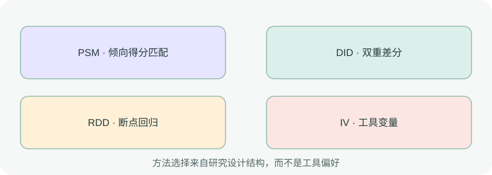

现实中很难随机决定谁接受政策、谁使用某项服务。现代因果推断利用观察数据中的结构、时间变化或外部规则寻找可比反事实，但每种方法都依赖不可省略的识别假设。
在第十七章，我们已经学习了因果推断的基础——为什么相关不等于因果、混杂变量、随机对照试验（RCT）的金标准。但在现实中，RCT往往太贵、太慢、甚至不道德（你能随机分配一些人吸烟吗？）。本章我们将介绍四种现代因果推断方法，它们能在观察性数据中识别因果关系，被誉为"因果推断的四驾马车"。

27.1 因果推断的黄金时代（2021年诺奖）
在进入具体方法之前，我想先说说为什么因果推断在今天如此重要。核心原因有三个：
- 数据爆炸：企业拥有海量的观察性数据，但"数据多"不等于"信息多"。没有因果视角，数据可能产生误导性结论。
- 决策需求：企业需要回答的不是"X和Y有关系吗"，而是"如果我增加X的投入，Y会增长多少"——这是反事实（Counterfactual）问题，需要因果推断。
- 方法论成熟：以Donald Rubin的潜在结果框架（Potential Outcomes Framework）和Judea Pearl的结构因果模型（Structural Causal Model）为代表的理论体系已经成熟，计算机也足够快，可以大规模应用这些方法。
27.2 倾向得分匹配（PSM）：模拟随机实验
倾向得分（Propensity Score）的定义很简洁：在给定协变量X的条件下，个体接受处理的概率，即e(X) = P(T=1 | X)。Rosenbaum和Rubin（1983年）证明了核心定理：如果处理分配在给定协变量X下是条件可忽略的（Conditional Ignorability），那么在给定倾向得分e(X)下，处理分配也是条件可忽略的。
换句话说：我们不需要匹配所有的协变量——只需匹配倾向得分这一个分数，就能平衡处理组和对照组。这是降维的艺术！
实际操作步骤：
- 估计倾向得分：用逻辑回归（或更复杂的模型），以是否接受处理为因变量，协变量为自变量，预测每个个体的倾向得分。
- 匹配：对每个处理组个体，在对照组中寻找倾向得分最接近的个体。常见方法包括最近邻匹配（Nearest Neighbor）、卡尺匹配（Caliper Matching）等。
- 检查平衡性：匹配后，检查处理组和对照组的协变量分布是否相似（标准化的均值差异通常在0.1以内）。
- 估计因果效应：比较匹配后样本的处理组和对照组的平均结果差异。
import numpy as np
import pandas as pd
from sklearn.linear_model import LogisticRegression
from sklearn.neighbors import NearestNeighbors
# 模拟数据：是否参加培训（treatment）对工资的影响
np.random.seed(42)
n = 2000
age = np.random.normal(35, 10, n)
education = np.random.normal(14, 3, n)
# 处理分配偏向于年轻、高学历者（选择性偏差！）
propensity = 1 / (1 + np.exp(-(-2 + 0.05 * age + 0.2 * education)))
treatment = np.random.binomial(1, propensity)
# 真实因果效应：参加培训使工资增加5000
wage = 30000 + 5000 * treatment + 1500 * age + 2000 * education + np.random.normal(0, 5000, n)
df = pd.DataFrame({'age': age, 'edu': education, 'treat': treatment, 'wage': wage})
# 第一步：估计倾向得分
logit = LogisticRegression()
logit.fit(df[['age', 'edu']], df['treat'])
df['pscore'] = logit.predict_proba(df[['age', 'edu']])[:, 1]
# 第二步：倾向得分匹配（最近邻，1:1）
treated = df[df['treat'] == 1].reset_index(drop=True)
control = df[df['treat'] == 0].reset_index(drop=True)
nn = NearestNeighbors(n_neighbors=1)
nn.fit(control[['pscore']])
distances, indices = nn.kneighbors(treated[['pscore']])
matched_control = control.iloc[indices.flatten()].reset_index(drop=True)
# 第三步：计算ATT（处理组的平均处理效应）
att_naive = treated['wage'].mean() - control['wage'].mean()
att_psm = treated['wage'].mean() - matched_control['wage'].mean()
print(f"朴素估计（有偏）：{att_naive:.0f}")
print(f"PSM估计（校正后）：{att_psm:.0f}")
print(f"真实因果效应：5000")
# 朴素估计通常高估，因为处理组本身就更容易获得高工资27.3 双重差分（DID）：利用时间维度
双重差分（Difference-in-Differences，DID）的基本思想很简单：比较处理组和对照组在政策实施前后的变化差异。它不需要控制所有混杂变量——只需假设处理组和对照组在没有处理的情况下，结果变量的变化趋势是平行的，即平行趋势假设（Parallel Trends Assumption）。
数学上：DID = (Y_post_treat - Y_pre_treat) - (Y_post_ctrl - Y_pre_ctrl)
DID之所以强大，在于它扣除了"时间趋势"和"组间固定差异"这两类最常见的混杂因素。假设我们想评估一个最低工资政策对就业的影响：就业率会随着经济周期自然波动（时间趋势），而处理组和对照组本身就有不同的就业率（组间差异）。DID通过双减法，排除了这两类噪声。
# DID 的简单实现
# 假设：某城市在2023年实施了新政策，我们想评估效果
# 处理组：A市（有政策），对照组：B市（无政策）
data = {
'city': ['A', 'A', 'B', 'B'],
'year': [2022, 2023, 2022, 2023],
'policy': [0, 1, 0, 0], # A市2023年实施
'outcome':[100, 115, 95, 100]
}
# DID = (115-100) - (100-95) = 15 - 5 = 10
# 政策使A市的结局变量增加了10个单位
# 这比简单的"政策实施前后比较"(115-100=15)要小，
# 因为扣除了B市同期的自然增长趋势(5)27.4 断点回归（RDD）：利用阈值
断点回归（Regression Discontinuity Design，RDD）利用了一个绝妙的自然实验场景：当某个"分配变量"（Running Variable）超过某个阈值时，处理状态发生跳跃。由于阈值附近的个体几乎"一模一样"（只是正好在阈值两侧），它们之间的结果差异可以归因于处理。
经典的例子：高考分数线。假设一本线是580分，579分的同学和581分的同学在能力上几乎没有差异，但581分可以上大学，579分不能。通过比较分数线附近学生的长期收入差异，就能估计上大学对收入的因果效应。这就是RDD的魔力。
RDD的核心假设是：个体无法精确操控分配变量在阈值附近的位置。如果学生和家长不能精确控制高考分数（比如恰好差1分），那么阈值附近的比较就是近似随机的。
| 方法 | 适用场景 | 核心假设 | 数据要求 |
|---|---|---|---|
| 倾向得分匹配（PSM） | 有可观测的混杂变量，处理组和对照组有足够重叠 | 条件可忽略性（无未观测混杂） | 丰富的协变量数据 |
| 双重差分（DID） | 有处理前后两期的面板或重复截面数据 | 平行趋势假设 | 至少两期数据 |
| 断点回归（RDD） | 存在明确阈值决定处理分配 | 连续性假设（个体不能精确操控阈值位置） | 阈值附近充足样本 |
| 工具变量（IV） | 存在未观测混杂，但找到合适的工具变量 | 相关性和外生性（工具只通过处理影响结果） | 有效的工具变量 |
27.5 因果推断在企业中的应用
今天，因果推断不再只是学术象牙塔里的概念。让我们看看科技巨头如何将这些方法落到实处：
- Uber：建立了"因果推断即服务"平台（Causal Inference as a Service），支持产品团队自助进行因果分析。用来评估司机激励机制、定价策略对供给的影响。
- Netflix：传统的A/B测试在新用户上没问题，但对于内容推荐等全局影响难以随机化。Netflix使用DID和合成控制法来评估原创内容投资对用户留存的影响。
- Amazon：广告归因是因果推断的经典战场——看到广告后购买了，是广告起了作用还是本来就会买？Amazon使用工具变量和基于浏览行为的匹配方法来准确归因。
- Google：使用增量实验（Incremental Lift）和地理实验（Geo Experiment）来评估广告投放的因果效果，这些方法本质上都是RCT和DID的变体。
好的，今天的内容到这里。我们学习了因果推断的"四驾马车"——PSM、DID、RDD和IV。每一种方法都有其独特的优势和严格的假设条件。理解这些假设什么时候成立、什么时候不成立，是你从一个工具使用者蜕变为一个方法论思考者的关键。下一章，也是本课程的最后一章，我们将进行一个综合项目——从提出问题到呈现结论的完整旅程。我们下章见！
CORE RELATION
本章核心关系
该差分结构只有在平行趋势等识别条件合理时，才可解释为处理效应。
先找研究设计中的准实验结构
选择场景，查看可考虑的方法及其必须论证的识别假设。
教学模拟：用于理解概念与方向，不替代真实数据分析、正式功效计算或研究设计审查。
TAKEAWAYS
本章要记住的三件事
- PSM 依赖给定协变量后的可忽略性与重叠性，匹配本身不能消除未观测混杂。
- DID 的核心识别条件通常包括平行趋势；应检查事件研究与稳健性。
- RDD 依赖阈值附近连续性与不可精确操控；IV 还要求排除限制等条件。
FURTHER READING
延伸阅读与核对来源
- Causal Inference: What IfHarvard
- The Effect: An Introduction to Research Design and CausalityNick Huntington-Klein
参考来源用于核对概念与方法。涉及具体数据、历史细节或行业案例时，应回到原始研究或官方文档逐项核验。